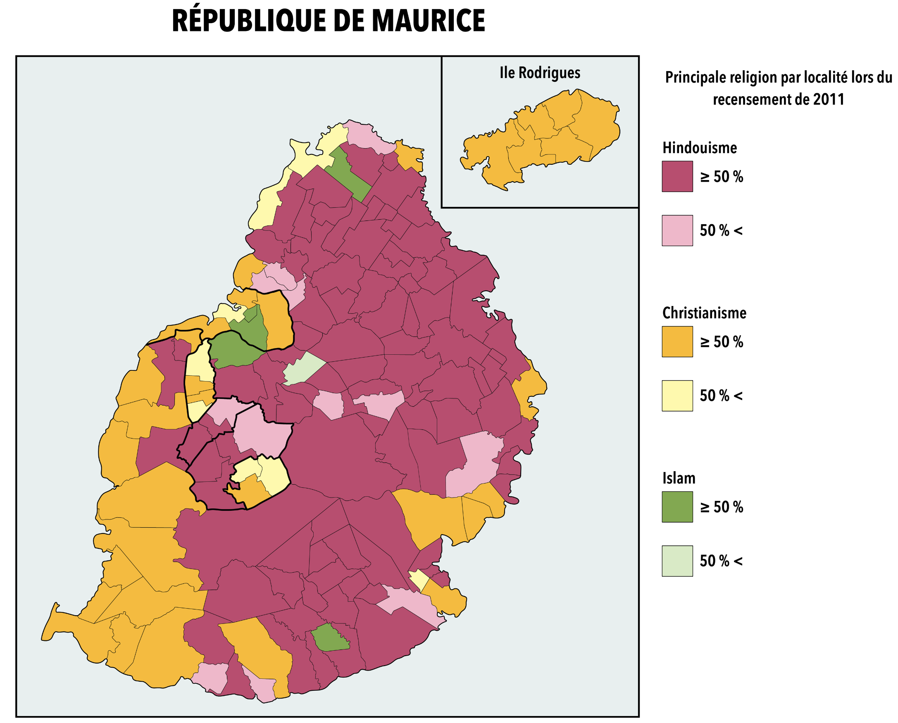
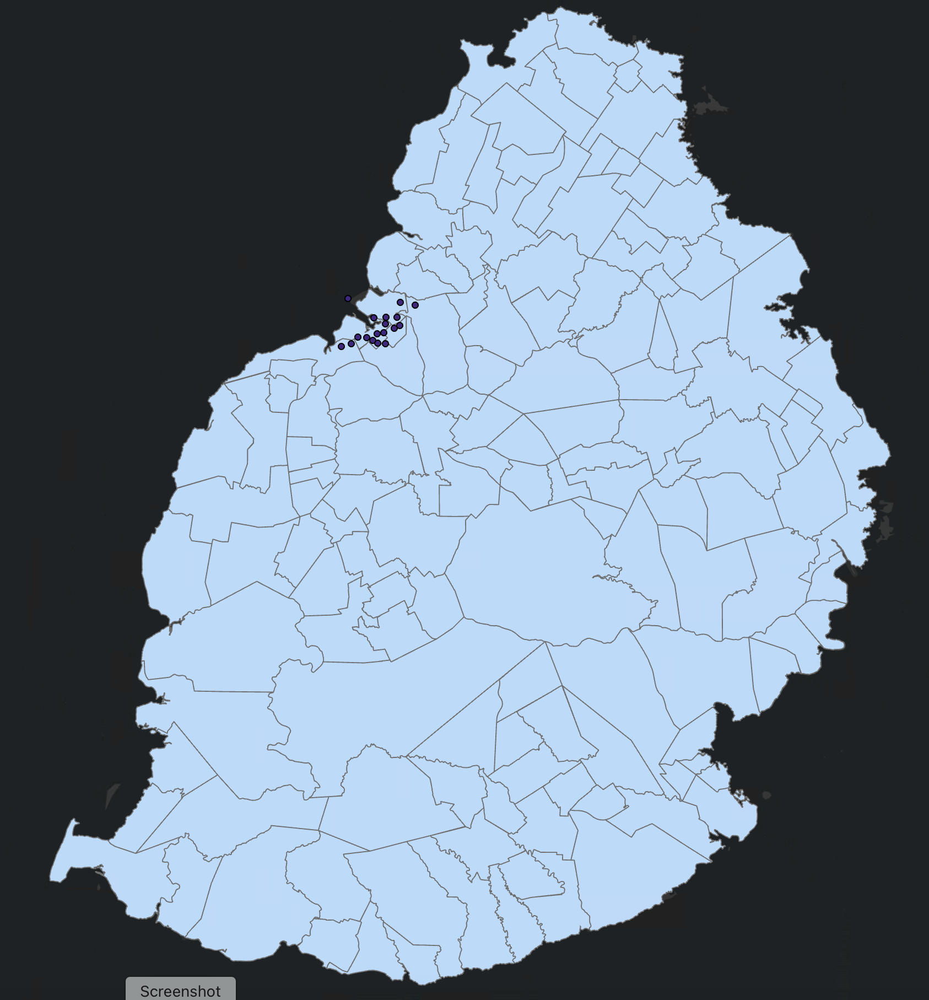

The goal of this project was to recreate a 2011 census map that identifies the major dominant religions in Mauritius by ward.
The original map was only available via a Reddit post,
and no official ward-level data (polygons) were publicly published.
Primary Workflow
Contact the Mauritius Census Department to request the official boundary file for wards.
Update the attribute table of the wards data by manually transcribing religion data from the Reddit map image into an ArcGIS feature class.
Create a final visual representation of the data in ArcGIS Pro to reflect dominant religions by ward.
All work was performed in ArcGIS Pro
Supporting Images

Original 2011 Religion Map from Reddit

Ward Boundary Data from Mauritius Census Department